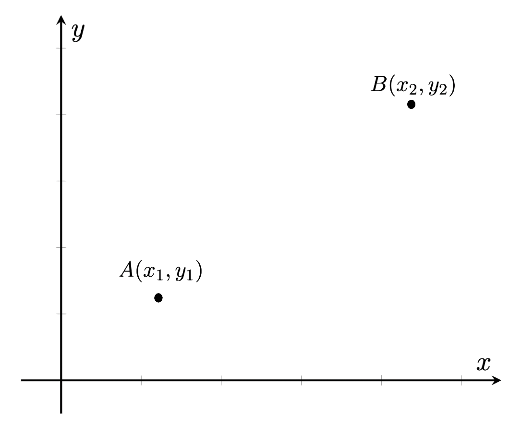
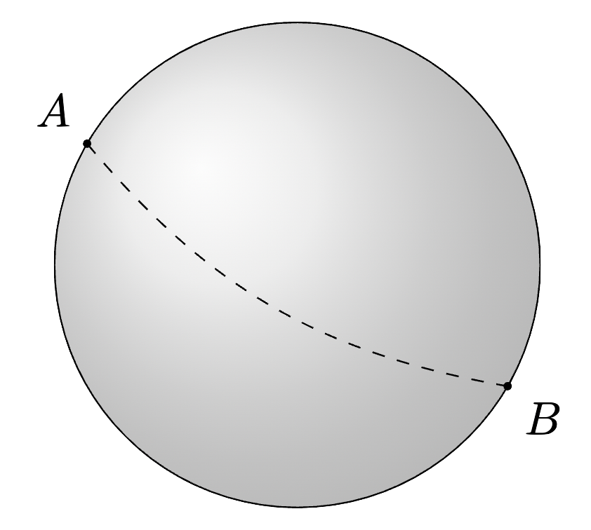
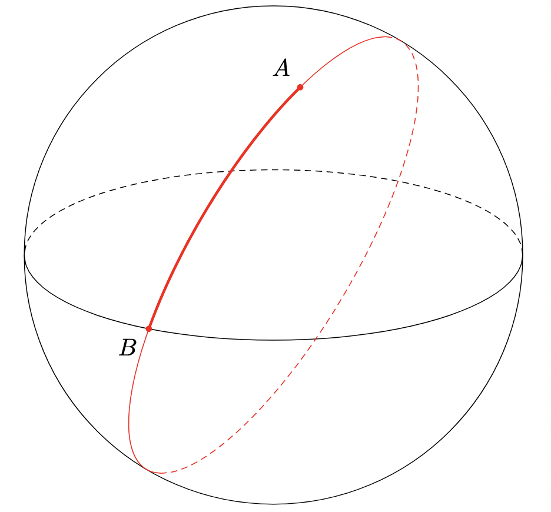
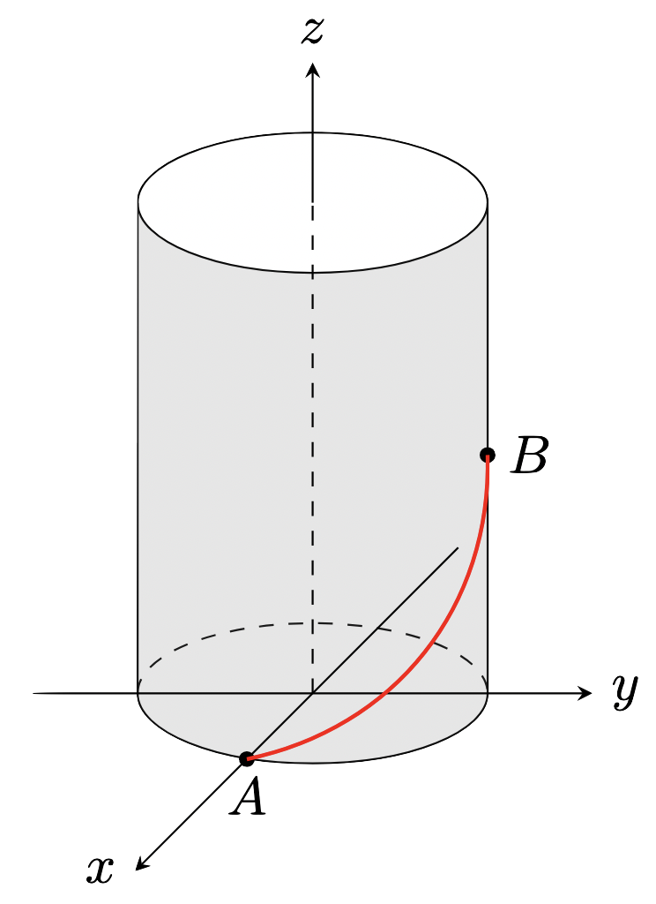
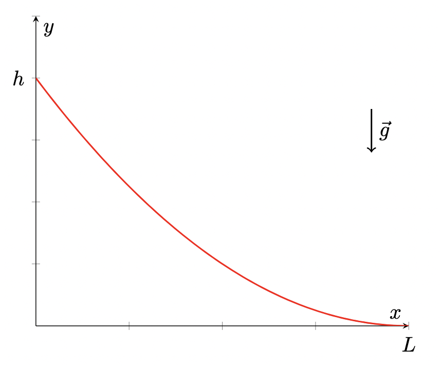
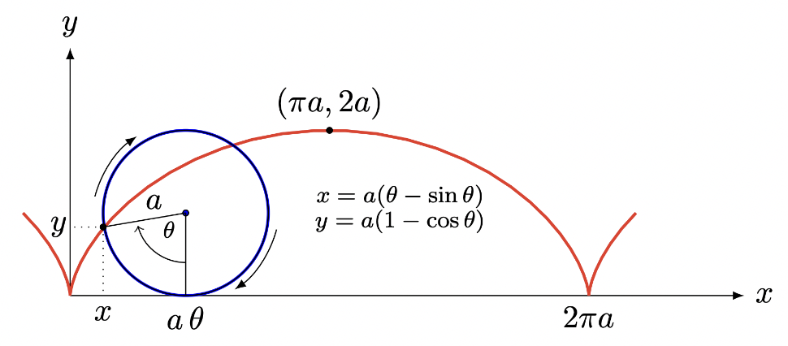
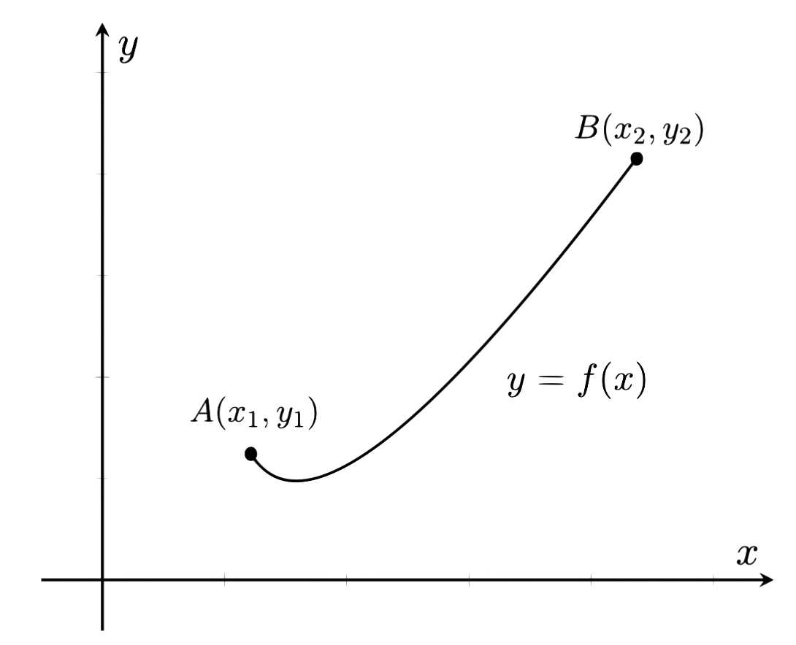

Euler-Lagrange Equation
Recall from Calculus I, we optimized functions by finding input values that give extremized output values. With variational calculus, now we optimize functionals by finding input functions that give extremized output values. First let us define the following:
- A function takes an input value and returns an output value.
- A functional takes an input function and returns a output value.
In this class, we will try to work in optimizing the following:
$$\boxed{I=\int_{x_1}^{x_2}F\left(y,\frac{dy}{dx},x\right)dx}$$But how to we optimize functionals? Recall for regular functions, in calculus I, we optimized a function $f(x)$ by finding the points where $f(x)$ is stationary, i.e where the derivative is zero: $f'(x)=0$.
Find an input function $y=f(x)$ such that the functional:
$$ I=\int_{x_1}^{x_2}F(y,y',x)\,dx $$
Assumptions:
- $y(x)$ is called the extremal function (as it makes $I$ stationary or extreme), and satisfies the boundary conditions: $y(x_1)=y_1$ and $y(x_2)=y_2$.
- All functions have continuous second derivatives.

Let's introduce a function: $\eta(x)$, which satisfies:
$$\eta(x_1)=\eta(x_2)=0$$Define another new function:
$$\bar{y}(x)=y(x)+\alpha\eta(x)$$Here, $\bar{y}(x)$ represents any varied path we could take from point $A$ to point $B$. Notice that $\bar{y}$ satisfies the same boundary conditions as $y(x)$. The $\alpha$ is a constant, so this makes $\bar{y}$ a family of varied curves starting from $A$ and ending at $B$. Our goal is to find a particular $\bar{y}$ such that the $I$ integral is stationary.
$\boxed{\textbf{Q}}\;$: What variable(s) is our integral $I$ a function of?
$\boxed{\textbf{A}}\;$: $I(\alpha)$ is only a function of $\alpha$, since the $x$ variable is integrating out.
Since $I$ depends only on $\alpha$, to make $I$ stationary, we optimize very similarly to regular calculus, we set:
$$\frac{dI}{d\alpha}\bigg|_{\alpha=0}=0$$We notice that $I$ is stationary when $\alpha=0$, since we know that $y(x)$ represents our extremal function. So we have:
$$\frac{dI}{d\alpha}\bigg|_{\alpha=0}\int_{x_1}^{x_2}F(\bar{y},\bar{y}',x)dx=0$$ $$\int_{x_1}^{x_2}\frac{\partial}{\partial\alpha}F(\bar{y},\bar{y}',x)\bigg|_{\alpha=0}dx=0$$Applying the chain rule, while also noting $x$ is independent of $\alpha$ we get:
$$\int_{x_1}^{x_2}\left[\frac{\partial F}{\partial\bar{y}}\cdot\frac{\partial\bar{y}}{\partial\alpha}+\frac{\partial F}{\partial \bar{y}'}\cdot\frac{\partial \bar{y}'}{\partial\alpha}\right]\bigg|_{\alpha=0}dx=0$$Note the following:
$$\bar{y}(x)=y(x)+\alpha\eta(x)$$ $$\bar{y}'(x)=y'(x)+\alpha\eta'(x)$$With partial derivatives of:
$$\frac{\partial\bar{y}}{\partial\alpha}=\eta(x)$$ $$\frac{\partial\bar{y}'}{\partial\alpha}=\eta'(x)$$So we have that:
$$\int_{x_1}^{x_2}\left[\frac{\partial F}{\partial \bar{y}}\eta(x)+\frac{\partial F}{\partial\bar{y}'}\eta'(x)\right]\bigg|_{\alpha=0}dx=0$$To proceed, let's focus on the second term. Here, we can apply integration by parts:
$$\int udv=uv-\int vdu$$With:
\begin{align*} u&=\frac{\partial F}{\partial\bar{y}'} & dv&=\eta'(x) \\ du&=\frac{d}{dx}\left(\frac{\partial F}{\partial\bar{y}'}\right) & v&=\eta(x) \end{align*}So integrating the second term by parts we get:
$$\underbrace{\frac{\partial F}{\partial\bar{y}'}\eta(x)\bigg|_{x_1}^{x_2}}_{\text{Term 1}}-\int_{x_1}^{x_2}\frac{d}{dx}\left(\frac{\partial F}{\partial\bar{y}'}\right)\eta(x)dx$$$\boxed{\textbf{Q}}\;$: What is the result of the Term 1 underbraced above?
$\boxed{\textbf{A}}\;$: The first term is $0$ due to the conditions we set on $\eta$. $\eta$ acts as a sort of 'variation' parameter between each endpoint, but there is no variation at each endpoint.
Plugging the above result back into our expression we get:
$$\int_{x_1}^{x_2}\left[\frac{\partial F}{\partial\bar{y}}\eta(x)-\frac{d}{dx}\left(\frac{\partial F}{\partial\bar{y}'}\eta(x)\right)\right]\bigg|_{\alpha=0}dx=0$$ $$\int_{x_1}^{x_2}\left[\frac{\partial F}{\partial\bar{y}}-\frac{d}{dx}\left(\frac{\partial F}{\partial\bar{y}'}\right)\right]\eta(x)\bigg|_{\alpha=0}dx=0$$When $\alpha=0$, $\bar{y}(x)=y(x)$ based on our definition for $\bar{y}(x)$, so we have:
$$\int_{x_1}^{x_2}\left[\frac{\partial F}{\partial y}-\frac{d}{dx}\left(\frac{\partial F}{\partial y'}\right)\right]\eta(x)dx=0$$Since $\eta(x)$ is any arbitrary function, the only way for the above integral to be $0$ is if:
$$\boxed{\frac{\partial F}{\partial y}-\frac{d}{dx}\left(\frac{\partial F}{\partial y'}\right)=0}$$And just like that, we have derived the Euler-Lagrange Equation!
$$\square$$If a function $y(x)$ is an extremal function of $I$, then $y(x)$ must satisfy the Euler-Lagrange Equation:
$$\boxed{\frac{\partial F}{\partial y}-\frac{d}{dx}\left(\frac{\partial F}{\partial y'}\right)=0}$$Notes:
- The Euler-Lagrange Equation is a necessary condition for the function $y(x)$ to give a stationary functional, it is not a sufficient condition.
- The Euler-Lagrange Equation only tells you the functions which make a functional stationary. It doesn't tell you about whether the functional becomes a maximum or a minimum. It doesn't tell you about the nature of the functions you determine.
Basic Application
Find a function passing through points $A$ and $B$ such that the distance between these points is as small as possible.
An element of of length on the curve is:
\begin{align*} dS^2 & =dx^2+dy^2 \\ dS & =\sqrt{dx^2+dy^2} \\ dS & =\sqrt{1+\left(\frac{dy}{dx}\right)^2}dx \end{align*}From which the total length is:
$$S=\int dS=\int _{x_1}^{x_2} \sqrt{1+\left(\frac{dy}{dx}\right)^2}dx$$We minimize using the Euler-Lagrange Equation. Here, $I=S$, and $F=\sqrt{1+\left(\frac{dy}{dx}\right)^2}$. Plugging in:
$$\underbrace{\frac{\partial}{\partial y}\left(\sqrt{1+\left(\frac{dy}{dx}\right)^2}\right)}_{=0}-\frac{d}{dx}\frac{d}{dy'}\left(\sqrt{1+\left(\frac{dy}{dx}\right)^2}\right)$$Here, $y'=\frac{dy}{dx}$, so:
$$-\frac{d}{dx}\frac{d}{dy'}\left(\sqrt{1+(y')^2}\right)$$ $$-\frac{d}{dx}\left(\frac{y'}{\sqrt{1+(y')^2}}\right)=0$$Since the derivative is 0, this implies that:
$$\frac{y'}{\sqrt{1+(y')^2}}=\text{constant}=C$$ $$\frac{(y')^2}{1+(y')^2}=C^2$$ $$(y')^2=C^2+C^2(y')^2$$ $$(y')^2[1-C^2]=C^2$$ $$y'=\sqrt{\frac{C^2}{1-C^2}}=\text{constant}=a$$Solving for $y$:
$$y'=\frac{dy}{dx}=a$$ $$\int dy=\int adx$$ $$\boxed{y=ax+b}$$This is the equation for a straight line.
Geodesics
A geodesic is a path that minimizes the distance between two points on a surface.
For example, our last problem was finding the geodesic on a 2D plane. We found that the geodesic was just a straight line connecting each point.
Find the geodesic of a sphere of radius $R$. That is, find the path between points $A$ and $B$ on the sphere which minimizes the distance.

We are minimizing the distance, i.e:
$$L=\int_A^BdS$$We know that:
$$dS=\sqrt{dx^2+dy^2+dz^2}$$To proceed, we will work in spherical coordinates, recall:
\begin{align*} x & = R \text{cos}\theta\text{sin}\phi \\ y & = R\text{sin}\theta\text{sin}\phi \\ z&=R\text{cos}\phi \end{align*}Where:
\begin{align*} R & = \text{radial distance} \\ \theta & = \text{angle from }+x-\text{axis} \\ \phi & = \text{angle from }+z-\text{axis} \end{align*}By the chain rule:
\begin{align*} dx & =\frac{\partial x}{\partial\theta}d\theta+\frac{\partial x}{\partial \phi}d\phi \\ dy & = \frac{\partial y}{\partial \theta}d\theta+\frac{\partial y}{\partial\phi}d\phi \\ dz& =\frac{\partial z}{\partial\theta}d\theta+\frac{\partial z}{\partial \phi}d\phi \end{align*}Plugging in our expressions we get:
\begin{align*} dx&=-R\text{sin}\theta\text{sin}\phi d\theta+R\text{cos}\theta\text{cos}\phi d\phi \\ dy & =R\text{cos}\theta\text{sin}\phi d\theta+R\text{sin}\theta\text{cos}\phi d\phi \\ dz &=-R\text{sin}\phi d\phi \end{align*}We plug each of these into our expression for $dS$. After a lot of messy algebra and use of the identity $\text{sin}^2x+\text{cos}^2x=1$, we end up with:
$$dS=Rd\phi\sqrt{\text{sin}^2\phi\left(\frac{d\theta}{d\phi}\right)^2+1}$$Plugging this into our expression for $L$:
$$L=\int_{\phi_A}^{\phi_B}\underbrace{R\sqrt{\text{sin}^2\phi\left(\frac{d\theta}{d\phi}\right)^2+1}}_{F(\theta,\theta',\phi)}d\phi$$Where $\phi_A$ and $\phi_B$ are the angular coordinates of points $A$ and $B$. We have also identified our functional $F(\theta,\theta',\phi)$. So we can now use the Euler-Lagrange Equation:
$$\frac{\partial F}{\partial \theta}-\frac{d}{d\phi}\left(\frac{\partial F}{\partial \theta'}\right)=0$$Notice our functional does not contain $\theta$, so the first partial derivative is 0. So we are left with:
$$\frac{d}{d\phi}\left(\frac{\partial F}{\partial \theta'}\right)=0$$This implies that:
$$\frac{\partial F}{\partial \theta'}=K$$For some constant $K$. However, we can also differentiate our functional $F$ with respect to $\theta'$ to get that:
$$\frac{\partial F}{\partial\theta'}=\frac{\theta'\text{sin}^2\phi}{\sqrt{(\text{sin}^2\phi)(\theta')^2+1}}$$So we know that:
$$\frac{\theta'\text{sin}^2\phi}{\sqrt{(\text{sin}^2\phi)(\theta')^2+1}}=K$$For some $K$ constant. We can then solve for $\theta'$.
$$\frac{(\theta')^2\text{sin}^4\phi}{(\text{sin}^2\phi)(\theta')^2+1}=K^2$$ $$(\theta')^2\text{sin}^4\phi=K^2[(\text{sin}^2\phi)(\theta')^2+1]$$ $$(\theta')^2[\text{sin}^4\phi-K^2\text{sin}^2\phi]=K^2$$ $$(\theta')^2=\frac{K^2}{\text{sin}^4\phi-K^2\text{sin}^2\phi}$$ $$\theta'=\frac{d\theta}{d\phi}=\frac{K}{\text{sin}\phi\sqrt{\text{sin}^2\phi-K^2}}$$$\boxed{\textbf{Q}}\;$: What must be true about our constant $K$?
$\boxed{\textbf{A}}\;$: $K< 1$ for the square root to be real, since the derivative must also exist and be real.
$$\theta=\int d\theta=\int \frac{K}{\text{sin}\phi\sqrt{\text{sin}^2\phi-K^2}} d\phi$$Use the substitution:
\begin{align*} u & = K\text{cot}\phi \\ du & = -K\text{csc}^2\phi d\phi \end{align*}This substitution works since the hypotenuse of this right-triangle is $\sqrt{u^2+K^2}$, which implies that:
$$\text{sin}\phi=\frac{K}{\sqrt{u^2+K^2}}\Longrightarrow \text{sin}^2\phi=\frac{K^2}{u^2+K^2}$$Plugging these substitutions into our integral:
$$\theta=-\int \frac{du}{\sqrt{1-K^2-u^2}}$$Note that $1-K^2$ is just another positive constant. Say that $1-K^2\equiv \alpha^2$, where $\alpha$ is some constant.
$$\theta=-\int \frac{du}{\sqrt{\alpha^2-u^2}}$$We can use a trig substitution of $u=\text{cos}\psi$, but the answer to this integral is simply:
$$\theta=\text{arccos}\left(\frac{u}{\alpha}\right)+\theta_0$$Re-substituting our initial variables:
$$\theta-\theta_0=\text{arccos}\left(\frac{K\text{cot}\phi}{\alpha}\right)$$Since $\frac{K}{\alpha}$ is just some constant, we can combine them by letting $\beta\equiv\frac{K}{\alpha}$, so:
$$\boxed{\theta-\theta_0=\text{arccos}(\beta\text{cot}\phi)}$$$\theta_0$ and $\beta$ are constants that can be determined by boundary conditions, i.e more information about points $A$ and $B$.
We found the geodesic for a sphere above, but what does it mean? For a 2D plane, it was easy to see that the geodesic was simply a straight line, but what about here? Consider our sphere with a 2D plane that intersects our sphere and passes through the origin. The intersection of the sphere and the 2D plane will trace our a circle as shown below:

The circle above is known as the Great Circle. The great circle is simply the intersection of a sphere's surface and a plane passing through the sphere's center.
Find the equation of the great circle above.
Recall the equation of a plane passing through the origin is:
$$Ax+By+Cz=0$$The plane will intersect with points on the sphere, so we will proceed with spherical coordinates:
\begin{align*} x & = R \text{cos}\theta\text{sin}\phi \\ y & = R\text{sin}\theta\text{sin}\phi \\ z&=R\text{cos}\phi \end{align*}Plugging this into the equation for our plane:
$$R \text{cos}\theta\text{sin}\phi+BR\text{sin}\theta\text{sin}\phi+CR\text{cos}\phi=0$$The $R$ variable will cancel, and we can divide the equation by $\text{sin}\phi$ to get:
$$A\text{cos}\theta+B\text{sin}\theta=-C\text{cot}\phi$$The left-hand side can be re-written using trig identities to obtain the following:
$$\sqrt{A^2+B^2}\text{cos}(\theta-\theta_0)=-C\text{cot}\phi$$Where:
$$\theta_0=\text{arctan}\left(\frac BA\right)$$ We can divide both sides by $\sqrt{A^2+B^2}$ and take the $\arccos$ of both sides to obtain: $$\boxed{\theta-\theta_0=\text{arccos}(\beta\text{cot}\phi)}$$Where:
$$\beta=\frac{-C}{\sqrt{A^2+B^2}}$$Notice this is exactly the same result we found from the geodesic of a sphere. What we can conclude that the geodesic of a sphere is simply an arc segment of the great circle.
Thus, the shortest distance between two points on a sphere is the arc segment of the great circle passing through those points.
Find the shortest path on a cylinder of radius $\rho=1$ with a revolution axis $z$ between the points $A(x,y,z)=(1,0,0)$ and $B(x,y,z)=(0,1,1)$. ou should use cylindrical coordinates $r=(\rho,\theta,z)$ and write down $ds^2$ in that set of coordinates, keeping in mind that $d\rho=0$.

Recall cylindrical coordinates we have:
$$\begin{cases} x=\rho \text{cos}\theta \\ y=\rho \text{sin}\theta \\ z=z \end{cases}\Longrightarrow \begin{cases} dx = -\rho\text{sin}\theta d\theta \\ dy= \rho\text{cos}\theta d\theta \\ dz=dz \end{cases}$$So we want to minimize the distance between points $A$ and $B$, so:
\begin{align*} S & = \int dS=\int_A^B\sqrt{x^2+y^2+z^2} \\ & = \int \sqrt{\rho^2\text{sin}^2\theta d\theta^2+\rho^2\text{cos}^2\theta d\theta^2+dz^2} \\ & =\int \sqrt{\rho^2 d\theta^2+dz^2} \\ & = \int \sqrt{d\theta^2\left(\rho^2+\left(\frac{dz}{d\theta}\right)^2\right)} \\ & = \int \underbrace{\sqrt{\rho^2+(z')^2}}_{F}d\theta \end{align*}So we have our functional we want to minimize, so we can use the Euler-Lagrange Equation:
$$\underbrace{\frac{\partial F}{\partial z}}_{=0}-\frac{\partial}{\partial \theta}\frac{\partial F}{\partial z'}=0$$The first term is 0, since our functional $F$ is independent of $z$. Plugging in:
$$\frac{\partial}{\partial \theta}\left(\frac{z'}{\sqrt{\rho^2+(z')^2}}\right)=0$$The derivative goes to zero, which implies:
$$\frac{z'}{\sqrt{\rho^2+(z')^2}}=C$$For some constant $C$. Solving for $z'$:
$$\frac{(z')^2}{\rho^2+(z')^2}=C^2$$ $$(z')^2=C^2\rho^2+(z')^2C^2$$ $$(z')^2[1-C^2]=C^2\rho^2$$ $$\frac{dz}{d\theta}=\sqrt{\frac{C^2}{1-C^2}}\rho$$ $$\int dz=\int \sqrt{\frac{C^2}{1-C^2}}\rho d\theta$$ $$z=\sqrt{\frac{C^2}{1-C^2}}\rho \theta+D$$Here $\rho=1$. At point $A(x,y,z)=(1,0,0)$, this is on the $x-$axis, so $\theta=0$, and clearly, $z=0$ too. So:
$$0=\sqrt{\frac{C^2}{1-C^2}}(0)+D$$ $$D=0$$At point $B(x,y,z)=(0,1,1)$, this is where $\theta=\frac{\pi}{2}$ and $z=1$, so:
$$1=C'\left(\frac{\pi}{2}\right)\Longleftrightarrow C'=\frac{2}{\pi}$$Where we have simplified the constant $C'\equiv\sqrt{\frac{C^2}{1-C^2}}$. So our answer is:
$$\boxed{z=\frac{2}{\pi}\theta}$$Beltrami Identity
Recall the Euler-Lagrange Equation as:
$$\frac{\partial F}{\partial y}-\frac{d}{dx}\left(\frac{\partial F}{\partial y'}\right)=0$$There is a special case of this equation known as the Beltrami Identity. This applies when our functional $F(y,y',x)$ does not explicitly depend on variable $x$, i.e:
$$\frac{\partial F}{\partial x}=0$$The Beltrami Identity is written as follows:
$$\boxed{F-y'\frac{\partial F}{\partial y'}=C}$$Where $C$ is a constant that can be found from specifying boundary conditions.
Derive the Beltrami Identity above, starting from the Euler-Lagrange Equation:
$$\frac{\partial F}{\partial y}-\frac{d}{dx}\left(\frac{\partial F}{\partial y'}\right)=0$$First, let's multiply both sides of the Euler-Lagrange Equation by $y'$. Call this equation \ref{eq:e}:
$$\begin{align} y'\frac{\partial F}{\partial y}-y'\frac{d}{dx}\left(\frac{\partial F}{\partial y'}\right)=0 \label{eq:e} \end{align}$$We know that our functional is $F=F(y,y'x)$, where $y$ is also a function of $x$. We can compute its total derivative with respect to $x$ by the chain rule:
$$\frac{d F}{d x}=\frac{\partial F}{\partial x}+\frac{\partial F}{\partial y}y'+\frac{\partial F}{\partial y'}y''$$ \begin{align} y'\frac{\partial F}{\partial y}= \frac{d F}{d x}-\frac{\partial F}{\partial x}-\frac{\partial F}{\partial y'}y'' \label{eq:f} \end{align}Now we substitute equation \ref{eq:f} into equation \ref{eq:e} to obtain:
$$\frac{d F}{d x}-\frac{\partial F}{\partial x}-y''\frac{\partial F}{\partial y'}-y'\frac{d}{dx}\left(\frac{\partial F}{\partial y'}\right)=0$$ $$\frac{d F}{d x}-\frac{\partial F}{\partial x}-\left[y''\frac{\partial F}{\partial y'}+y'\frac{d}{dx}\left(\frac{\partial F}{\partial y'}\right)\right]=0$$Notice the expression in the brackets looks like the product rule. We can 'reverse' the product rule and write:
$$\frac{d F}{d x}-\frac{\partial F}{\partial x}-\frac{d}{dx}\left(y'\frac{\partial F}{\partial y'}\right)=0$$ $$\frac{\partial F}{\partial x}=\frac{d F}{d x}-\frac{d}{dx}\left(y'\frac{\partial F}{\partial y'}\right)$$ $$\frac{\partial F}{\partial x}=\frac{d}{dx}\left[F-y'\frac{\partial F}{\partial y'}\right]$$As we mentioned earlier, if $F(y,y',x)$ has no explicit dependence on $x$, then the left-hand side of our above equation goes to 0. We are left with:
$$0=\frac{d}{dx}\left[F-y'\frac{\partial F}{\partial y'}\right]$$Integrating both sides with respect to $x$:
$$\int 0dx=\int \frac{d}{dx}\left[F-y'\frac{\partial F}{\partial y'}\right]dx$$ $$\boxed{F-y'\frac{\partial F}{\partial y'}=C}$$ $$\square$$The Brachistochrone Problem
How can we use variational calculus to solve physics problems? Consider the famous Brachistochrone Problem. Observe the graph below.

Suppose I want to design a ski slope of height $h$ and length $L$ similar to the one above such that you travel down the slope in the shortest possible time. What shape will the ski slope take? Assume gravity $\vec{g}$ is pointing downwards.
What we're doing here is minizmizing the time it takes for a skier to travel from initial point $A(0,h)$ to final point $B(L,0)$, under a constant force field $\vec{g}$.
Our goal is to minimize the following with respect to a function $y=f(x)$:
$$T=\int_A^Bdt$$We know that:
$$\text{Time}=\frac{\text{Distance}}{\text{Velocity}}$$So we have that:
$$dt=\frac{dS}{v(x,y)}$$We saw in the previous example that:
$$dS=\sqrt{dx^2+dy^2}=\sqrt{1+\left(\frac{dy}{dx}\right)^2}dx$$To find $v(x,y)$, we can use conservation of energy:
\begin{align*} mgh & =mgy+\frac 12 mv^2 \\ v & =\sqrt{2g(h-y)} \end{align*}So our functional becomes:
\begin{align*} T & =\int_0^L\underbrace{\sqrt{\frac{1+(y')^2}{2g(h-y)}}}_{F(y,y',x)}dx \end{align*}We noticed that the above $F(y,y',x)$ does not depend on variable $x$, so we can use Beltrami's Identity:
$$F-y'\frac{\partial F}{\partial y'}=C$$Plugging in our functional into the identity:
$$\sqrt{\frac{1+(y')^2}{2g(h-y)}}-\frac{(y')^2}{\sqrt{(1+(y')^2)(2g(h-y))}}=C$$ $$1+(y')^2-(y')^2=C\sqrt{(1+(y')^2)(2g(h-y))}$$ $$1=C\sqrt{(1+(y')^2)(2g(h-y))}$$ $$1=C^2(1+(y')^2)(2g)(h-y))$$ $$C_1=(1+(y')^2)(h-y)$$Where:
$$C_1=\frac{1}{2gC^2}$$So we have:
$$C_1=(h-y)+(y')^2(h-y)$$ $$(y')^2(h-y)=C_1-(h-y)$$ $$(y')^2=\frac{C_1-(h-y))}{h-y}$$ $$y'=\frac{dy}{dx}=\sqrt{\frac{C_1-(h-y))}{h-y}}$$ $$\int dx=\int\sqrt{\frac{h-y}{C_1-(h-y)}} dy $$Let's make the following substitution:
\begin{align*} y & = h-C_1\text{sin}^2\left(\frac{\theta}{2}\right) \\ dy & = -C_1\text{sin}\left(\frac{\theta}{2}\right)\text{cos}\left(\frac{\theta}{2}\right)d\theta \end{align*}Plugging into our integral:
$$x=\int \sqrt{\frac{C_1\text{sin}^2\left(\frac{\theta}{2}\right)}{C_1-C_1\text{sin}^2\left(\frac{\theta}{2}\right)}}\left(-C_1\text{sin}\left(\frac{\theta}{2}\right)\text{cos}\left(\frac{\theta}{2}\right)\right)d\theta$$ $$x=-C_1\int \frac{\text{sin}\left(\frac{\theta}{2}\right)}{\text{cos}\left(\frac{\theta}{2}\right)}\text{sin}\left(\frac{\theta}{2}\right)\text{cos}\left(\frac{\theta}{2}\right)d\theta$$ $$x=-C_1\int \text{sin}^2\left(\frac{\theta}{2}\right)d\theta$$ $$x=-\frac{C_1}{2}\int (1-\text{cos}\theta)d\theta$$If we let $-C_1=K_1$ (some constant), we get:
$$x=\frac{K_1}{2}(\theta-\text{sin}\theta)+K_2$$Using the identity $\text{sin}^2\left(\frac{\theta}{2}\right)=\frac 12 (1-\text{cos}\theta)$ for the $y$ equation, we get our solution in the form of the parametric equations:
$$\boxed{\begin{cases} x=\frac{K_1}{2}(\theta-\text{sin}\theta)+K_2 \\ y=h+\frac{K_1}{2}(1-\text{cos}\theta) \end{cases}}$$How can we interpret our answer from the brachistochrone problem? What shape do these parametric equations form? The parametric equations form a cycloid.
A cycloid is the curve generated by a point on the circumference of a circle that rolls along a straight line.
Let $r$ be the radius of the circle, and $\theta$ be the angular displacement of the circle. Then the parametric equations in polar form are:
$$\begin{cases} x=r(\theta-\text{sin}\theta) \\ y=r(1-\text{cos}\theta) \end{cases}$$A pictorial representation of a cycloid curve be traced out is shown below.

Multiple Dependent Variables
So far we have derive the Euler Lagrange Equation that optimizes a functional of the form:
$$F=F(y,y',x)$$The question that naturally arises is how we can generalize the Euler-Lagrange Equation for any functional of the form:
$$F=F\left(y_1,y_1',y_2,y_2',\dots,y_n,y_n',x\right)$$This is going to be our next step:
Derive an equation that gives stationary functions of the functional $I$ below:
$$I=\int_{x_1}^{x_2}F\left(y_1,y_1',y_2,y_2',\dots,y_n,y_n',x\right)$$Note these functions must obey the boundary conditions:
$$y_i(x_1)=y_{i1}\;\;\;\text{and }\;\;y_i(x_2)=y_{i2},\;\;\;\text{for }\;\;i=1,\dots,n$$Where the functions $y_i$ make $I$ stationary.
Similarly to our proof of the Euler-Lagrange Equation, let us introduce a function $\eta_i(x)$ that satisfies:
$$\eta_i(x_1)=\eta(x_2)$$Similarly, we define a function $\bar{y}_i(x)$ that represents a varied path from $x_1$ to $x_2$ defined as:
$$\bar{y}(x)=y_i(x)+\alpha_i\eta_i(x)$$Where $\alpha_i$ is a constant. Notice $\bar{y}(x)$ satisfies the same boundary conditions as $y(x)$. Our goal is to find the particular $\bar{y}(x)$ that makes $I$ stationary.
To do this, we notice that $I$ is only a function of $\alpha_i$, $I(\alpha_i)$, since all the $x$ terms from $x$ and $y_i(x)$ and their derivatives get integrated out. So to make $I$ stationary, we set:
$$\frac{dI}{d\alpha_i}\bigg|_{\alpha_i=0}=0$$So we have:
$$\frac{d}{d\alpha_i}\bigg|_{\alpha_i=0}\int_{x_1}^{x_2}F\left(\bar{y}_1,\bar{y}_1'\dots,\bar{y}_i,\bar{y}_i',\dots,\bar{y}_n,\bar{y}_n',x\right)dx=0$$ $$\int_{x_1}^{x_2}\frac{\partial}{\partial\alpha_i}\bigg|_{\alpha_i=0}F\left(\bar{y}_1,\bar{y}_1'\dots,\bar{y}_i,\bar{y}_i',\dots,\bar{y}_n,\bar{y}_n',x\right)dx=0$$$\boxed{\textbf{Q}}\;$: What are the only terms of our functional $F$ that survive when we take the partial.
$\boxed{\textbf{A}}\;$: It is only the $\bar{y}_i$ and $\bar{y}_i'$ term that depend on $\alpha_i$, o all other terms differentiate to $0$.
$$\int_{x_1}^{x_2}\left(\frac{\partial F}{\partial\bar{y}_i}\cdot\frac{\partial \bar{y}_i}{\partial\alpha_i}+\frac{\partial F}{\partial\bar{y}_i'}\cdot\frac{\partial \bar{y}_i'}{\partial\alpha_i}\right)dx\bigg|_{\alpha_i=0}=0$$We know that $\bar{y}_i(x)=y_i(x)+\alpha_i\eta_i(x)$, so we have that:
$$\frac{\partial\bar{y}_i}{\partial\alpha_i}=\eta_i\;\;\;\text{and }\;\;\frac{\partial\bar{y}_i}{\partial\alpha_i}=\eta_i'$$So we have:
$$\int_{x_1}^{x_2}\left(\frac{\partial F}{\partial\bar{y}_i}\eta_i+\frac{\partial F}{\partial\bar{y}_i'}\eta_i'\right)dx\bigg|_{\alpha_i=0}=0$$As before, we can take the second term and integrate by parts. The result of this is:
$$\left[\int_{x_1}^{x_2}\frac{\partial F}{\partial\bar{y}_i}\eta_idx+\frac{\partial F}{\partial\bar{y}_i}\left[\eta_i\right]\bigg|_{x_1}^{x_2}-\int_{x_1}^{x_2}\eta_i\frac{d}{dx}\left(\frac{\partial F}{\partial\bar{y}_i'}\right)dx\right]_{\alpha_i}=0$$From the boundary conditions, we know $\eta(x_1)=\eta(x_2)$, so the second term goes to 0. We're left with:
$$\int_{x_1}^{x_2}\left[\frac{\partial F}{\partial\bar{y}_i}\eta_i-\eta_i \frac{d}{dx}\left(\frac{\partial F}{\partial\bar{y}_i'}\right)\right]dx\bigg|_{\alpha_i=0}=0$$ $$\int_{x_1}^{x_2}\left[\frac{\partial F}{\partial\bar{y}_i}-\frac{d}{dx}\left(\frac{\partial F}{\partial\bar{y}_i'}\right)\right]\eta_idx\bigg|_{\alpha_i=0}=0$$At $\alpha_i=0$ we have:
$$\int_{x_1}^{x_2}\left[\frac{\partial F}{\partial y_i}-\frac{d}{dx}\left(\frac{\partial F}{\partial y_i'}\right)\right]\eta_idx=0$$Since $\eta_i$ is just some function, the only way for this integral to be 0 is if the integrand is 0, i.e:
$$\boxed{\frac{\partial F}{\partial y_i}-\frac{d}{dx}\left(\frac{\partial F}{\partial y_i'}\right)=0}$$Looks familiar, so what is the actual difference here between our regular functional $F(y,y',x)$?
Well, in order to determine the $y$'s that make $I$ stationary, instead of solving just one Euler-Lagrange equation to find a single function that makes $I$ stationary, we have to solve $n$ Euler-Lagrange equations to find the combination of $n$ functions which make $I$ stationary, where there is one Euler-Lagrange equation for each dependent variable $y_i$.
This means we'll have an Euler-Lagrange equation for $y_1$, and another Euler-Lagrange equation for $y_2$, and so for $y_n$. Solving all these Euler-Lagrange equations gives the stationary set of functions that makes $I$ stationary.
Constrained Variation
Suppose we now have your typical functional as below:
$$I=\int_{x_1}^{x_2}F(y,y',x)dx$$Suppose our goal is again to find a function $y$ such that $I$ above is stationary. Normally, we would just use the Euler-Lagrange Equation. However, suppose now there is an additional condition on our function $y$, namely:
$$J=\int_{x_1}^{x_2}G(y,y',x)$$Where $J$ is some particular constant. Here is an example of wanting to optimize something with a constraint. The typical move from here is to use the method of Lagrange Multipliers.
Consider our typical functional below:
$$I=\int_{x_1}^{x_2}F(y,y',x)dx$$We want to find a function $y$ which makes the functional $I$ stationary, subject to the condition:
$$J=\int_{x_1}^{x_2}G(y,y',x)$$Where $J$ must be a constant for a particular fixed value. Derive an Euler-Lagrange Equation for this.
To proceed with Lagrange Multipliers, we construct a new functional $K$ defined as:
$$K=I+\lambda J$$Where $\lambda$ is the Lagrange Multiplier, and is an unknown constant. So we have:
$$K=\int_{x_1}^{x_2}F(y,y',x)dx+\lambda \int_{x_1}^{x_2}G(y,y',x)dx$$ $$K=\int_{x_1}^{x_2}F(y,y',x)+\lambda G(y,y',x)dx$$We can then apply the Euler-Lagrange Equation to this to get:
$$\frac{\partial}{\partial y}(F+\lambda G)-\frac{d}{dx}\left[\frac{\partial}{\partial y'}(F+\lambda G)\right]=0$$ $$\boxed{\frac{\partial F}{\partial y}-\frac{d}{dx}\left(\frac{\partial F}{\partial y'}\right)+\lambda\left[\frac{\partial G}{\partial y}-\frac{d}{dx}\left(\frac{\partial G}{\partial y'}\right)\right]=0}$$Isoperimetric Problems
Suppose a line of length $L$ is supported at points $A$ and $B$, with $L>d_{AB}$. What shape, $y=f(x)$, should we draw the line such that the area under $y=f(x)$ is maximized?
Note: We take $L>d_{AB}$ since if $L=d_{AB}$, then $y=f(x)$ would just be a straight line, as we have seen in a previous problem.

Our goal is to maximize the area under the curve, $\alpha$, i.e the integral:
$$I=\alpha=\int_{x_A}^{x_B}\underbrace{y}_{F}dx$$But now it is subject to the constraint that $y$ must have length $L$, or in other terms:
$$J=L=\int_{x_A}^{x_B}\underbrace{\sqrt{1+(y')^2}}_{G}dx$$We proceed by method of Lagrange Multipliers, writing that:
$$K=I+\lambda J$$Where $\lambda$ is a Lagrange multiplier. Then:
\begin{align*} K & = \int_{x_A}^{x_B}ydx+\lambda\int_{x_A}^{x_B}\sqrt{1+(y')^2}dx \\ & =\int_{x_A}^{x_B}\left(y+\lambda\sqrt{1+(y')^2}\right)dx \end{align*}Now we apply the Euler Lagrange Equation to the above integrand, i.e $F+\lambda G$.
$$\frac{\partial}{\partial y}(F+\lambda G)-\frac{d}{dx}\left[\frac{\partial}{\partial y'}(F+\lambda G)\right]=0$$ $$1-\frac{d}{dx}\left[\frac{\lambda}{2\sqrt{1+(y')^2}}\cdot 2y'\right]=0$$ $$\int 1dx=\int \frac{d}{dx}\left[\frac{\lambda y'}{\sqrt{1+(y')^2}}\right]$$ $$x+C_1=\frac{\lambda y'}{\sqrt{1+(y')^2}}$$ $$(x+C_1)^2=\frac{\lambda^2(y')^2}{1+(y')^2}$$ $$(x+C_1)^2+(y')^2(x+C_1)^2=\lambda^2(y')^2$$ $$(x+C_1)^2=[\lambda^2-(x+C_1)^2](y')^2$$ $$\frac{dy}{dx}=\frac{x+C_1}{\sqrt{\lambda^2-(x+C_1)^2}}$$ $$\int dy=\int \frac{x+C_1}{\sqrt{\lambda^2-(x+C_1)^2}}dx$$Make the substitution $u=x+C_1$ and $du=dx$. We then have:
$$y=\int \frac{u}{\sqrt{\lambda^2-u^2}}du$$Now let $v=\lambda^2-u^2$, then $dv=-2udu$, or $du=-\frac{dv}{2u}$. So we have:
\begin{align*} y & = \int \frac{-udv}{2u\sqrt{v}} \\ & = -\frac 12 \int \frac{dv}{\sqrt{v}} \\ & = -\frac 12 \cdot 2\sqrt{v}+C_2' \\ & = -\sqrt{\lambda^2-u^2}+C_2' \\ & = -\sqrt{\lambda^2-(x+C_1)^2}+C_2' \end{align*}If we let $C_2\equiv -C_2'$, we end up with:
$$y+C_2=-\sqrt{\lambda^2-(x+C_1)^2}$$ $$\boxed{(x+C_1)^2+(y+C_2)^2=\lambda^2}$$We can see that this is an equation for a circle of radius $\lambda$, centered at $(-C_1,-C_2)$.
Using the general solution obtained in the last problem, find the values of constants $C_1$, $C_2$, and $\lambda$, if we take that points $A=(-\sqrt{3},0)$, $B=(\sqrt{3},0)$, and the function has length of $L=\frac{4\pi}{3}$
We have our solution as:
$$(x+C_1)^2+(y+C_2)^2=\lambda^2$$Plugging each point into the equation above gives:
\begin{align} (C_1-\sqrt{3})^2+C_2^2=\lambda^2 \label{eq:y} \end{align} \begin{align} (C_1+\sqrt{3})^2+C_2^2=\lambda^2 \label{eq:z} \end{align}Equating \ref{eq:y} and \ref{eq:z} together:
$$(C_1-\sqrt{3})^2+C_2^2=(C_1+\sqrt{3})^2+C_2^2$$ $$(C_1-\sqrt{3})^2=(C_1+\sqrt{3})^2$$ $$\boxed{C_1=0}$$We can now plug $C_1=0$ into equation \ref{eq:z} to get:
\begin{align} C_2^2=\lambda^2-3 \label{eq:x} \end{align}We can then use the constraint equation:
$$L=\int_{x_A}^{x_B}\sqrt{1+(y')^2}dx=\int_{-\sqrt{3}}^{\sqrt{3}}\sqrt{1+(y')^2}dx$$Noting from the last problem, we have that:
$$y'=\frac{dy}{dx}=\frac{x+C_1}{\sqrt{\lambda^2-(x+C_1)^2}}=\frac{x}{\sqrt{\lambda^2-x^2}}$$So:
$$L=\int_{-\sqrt{3}}^{\sqrt{3}}\sqrt{1+\frac{x^2}{\lambda^2-x^2}}dx=\int_{-\sqrt{3}}^{\sqrt{3}}\frac{\lambda}{\sqrt{\lambda^2-x^2}}dx$$Now we use the trig substitution of $x=\lambda\text{sin}\theta$ and $dx=\lambda\text{cos}\theta$, we get:
\begin{align*} L & = \int \frac{\lambda^2\text{cos}\theta}{\sqrt{\lambda^2-\lambda^2\text{sin}^2\theta}}d\theta \\ & =\int \lambda d\theta \\ & =\lambda \theta \\ & = \lambda\text{arcsin}\left(\frac{x}{\lambda}\right)\bigg|_{-\sqrt{3}}^{\sqrt{3}} \\ & = \lambda\left[\text{arcsin}\left(\frac{\sqrt{3}}{\lambda}\right)-\text{arcsin}\left(-\frac{\sqrt{3}}{\lambda}\right)\right] \end{align*}Now since we have $L=\frac{4\pi}{3}$, we have:
$$\frac{4\pi}{3}=\lambda\left[\text{arcsin}\left(\frac{\sqrt{3}}{\lambda}\right)-\text{arcsin}\left(-\frac{\sqrt{3}}{\lambda}\right)\right]$$Now, obviously this is hard to analytically solve. But if we note that:
$$\text{sin}\left(\frac{\pi}{3}\right)=\frac{\sqrt{3}}{2}\Longleftrightarrow \text{arcsin}\left(\frac{\sqrt{3}}{2}\right)=\frac{\pi}{3}$$We should be able to convince ourselves that:
$$\boxed{\lambda=2}$$Plugging this into equation \ref{eq:x}, we get:
\begin{align*} C_2^2 &= \lambda^2-3 \\ & =4-3 \\ C_2 & = \pm 1 \end{align*}Take $C_2=1$, so we get that our equation is:
$$\boxed{x^2+(y+1)^2=4}$$$\boxed{\textbf{Q}}\;$: Could we have used the Beltrami Identity to solve this isoperimetric problem?
$\boxed{\textbf{A}}\;$: Yes, since our functional had no explicit dependence on $x$. However, using the Euler-Lagrange equation is actually simpler, in this case.